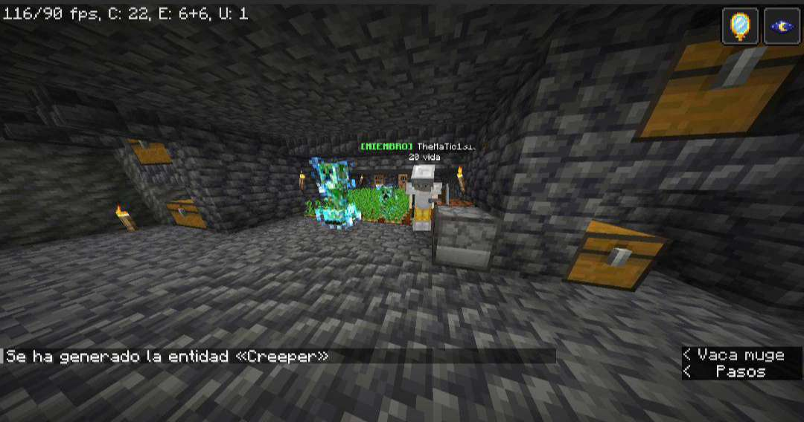

Alepro con xrayAlepro con xray 2Alepro con xray 3Gonzalety robandoprimera ciudad del end avistadahorbox yendo a por elytrasa por el dragónhorbox atacando al dragónwhoppy atacando al dragónguerreros contra el dragóndragón siendo atacadobroma de creeper falso a mmartinezbroma de creeper falso a horbox

broma de creeper falso a TheMatic13dragon recien asesinadomanzana de netheritayendo a sculklandsparte de la llave a sculklandsmatando a un wardenmatando a un warden 2parte de la llave a sculklands 2llave a sculklandsportal a sculklands activadoa punto de entrar a sculklandszombie de sculkaraña de sculkinfectado por araña de sculkbestia de sculktorre de bedrockguardian de sculkloot generalhabitacion amarilla de la torreloot de la habitacion amarillahabitacion rosa de la torreloot de la habitacion rosaloot de la habitacion azulhabitacion verde de la torreherobrine infectadoherobrine siendo atacadoel sanche matando a herobrinearmadura de sculk